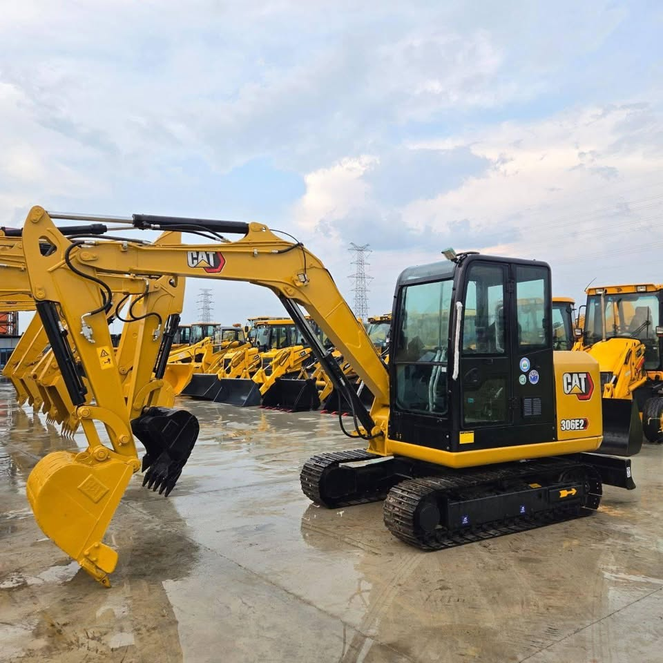

Refurbished Caterpillar Cat 306 Excavator
The Caterpillar Cat 306 Excavator is a compact, versatile, and highly efficient machine designed for a wide range of construction, landscaping, and utility tasks. Known for its superior digging capabilities, excellent fuel efficiency, and advanced hydraulic systems, the Cat 306 is an ideal choice for contractors working in confined spaces and on small to medium-sized projects. A refurbished Cat 306 delivers the same high-quality performance as a new machine but at a significantly lower price, making it a smart investment for businesses aiming to maximize their equipment budget without compromising on reliability.
Honestly, it's almost impossible to buy a brand new excavator from China. They either don't exist or are made in China. If a Chinese seller tells you their Caterpillar/Komatsu/Volvo/Kobelco/Hitachi is brand new, they're lying. Therefore, a refurbished excavator is your best bet.

Here are the detailed specifications for a refurbished Caterpillar Cat 306 CR excavator:
Operating Weight and Dimensions
- Operating Weight: ~7,490 kg (16,500 lbs)
- Transport Length: ~5.7–5.9 meters
- Transport Width: ~2.0 meters
- Transport Height: ~2.5 meters
- Tail Swing Radius: ~1.6 meters (compact radius design)
- Track Width: 400–450 mm standard
- Undercarriage: Variable gauge (expandable for stability)
Engine and Powertrain
- Engine Model: Cat C2.4 Turbocharged (Tier 4 Final / EU Stage V compliant)
- Rated Power Output: ~41.7 kW (55.9 hp) @ 2,400 rpm
- Fuel Tank Capacity: ~120 liters
- Travel Speed: 2.8–4.8 km/h
- Swing Speed: ~10–11 rpm
- Drive Type: Hydrostatic with planetary final drives
Hydraulic System
- Main Pump Type: Load-sensing, variable displacement piston pumps
- Flow Rate: ~2 × 110 L/min
- System Pressure: Up to 28 MPa
- Hydraulic Oil Capacity: ~90–100 liters
- Efficiency Features:
- Smart flow distribution
- Boom/swing priority
- Regeneration circuits
- Auto hydraulic warm-up
Performance Metrics
- Bucket Capacity: 0.25–0.35 m³ (SAE heaped)
- Max Digging Depth: ~4.1–4.3 meters
- Max Reach (Horizontal): ~6.3–6.5 meters
- Max Dump Height: ~4.2–4.5 meters
- Bucket Digging Force: ~50–55 kN
- Arm Digging Force: ~35–40 kN
Cab and Operator Features
- Cab Type: ROPS/FOPS certified
- Display: LCD monitor with diagnostics and fuel tracking
- Controls: Pilot-operated joysticks with auxiliary hydraulic circuit
- Comfort: Adjustable seat, optional HVAC, low-noise cab
- Visibility: Wide glass area, rear-view camera, LED work lights
Smart Features and Efficiency
- Fuel Efficiency:
- Auto idle and engine shutdown
- ECO mode
- Emissions Control:
- DOC + DPF + SCR (Tier 4 Final)
- Transportability: Easily trailerable under 8-ton class
Attachments Compatibility
- Standard Bucket: 0.25–0.35 m³
- Optional Tools: Hydraulic breaker, auger, compactor, ripper
- Quick Coupler: Manual or hydraulic options available
Refurbishment Scope
Refurbished Cat 306 units typically include:
- Engine Overhaul: Turbocharger, injectors, cooling system
- Hydraulic Restoration: Pump recalibration, valve block testing, hose replacement
- Electrical Diagnostics: Monitor, sensors, wiring harness
- Cab Reconditioning: Seat, joysticks, HVAC, repainting
- Structural Repairs: Boom/bucket welding, bushing replacement, undercarriage rebuild
Overview of the Caterpillar Cat 306 Excavator
The Caterpillar Cat 306 is a small-to-mid-sized, tracked hydraulic excavator that is perfect for digging, grading, lifting, and other applications that require precision and power. Its compact design makes it ideal for work in tight spaces, such as urban construction sites, residential landscaping, and utility installations. The Cat 306 combines impressive digging depth with a powerful engine and efficient hydraulics to handle tasks with ease.
Refurbished Cat 306 excavators undergo a thorough reconditioning process, where all worn-out parts are replaced with genuine Caterpillar components, ensuring that the machine is restored to factory specifications. This makes a refurbished Cat 306 a cost-effective solution for contractors looking to reduce equipment costs while still ensuring high performance.
Key Specifications of the Caterpillar Cat 306 Excavator
The Cat 306 is equipped with a range of features and specifications that make it a versatile and capable machine for various tasks:
-
Operating Weight: Approximately 6,000 - 7,000 kg (13,200 - 15,400 lbs)
-
Engine Power: 55 - 75 hp (41 - 56 kW)
-
Max Digging Depth: Up to 5.3 meters (17.4 feet)
-
Maximum Reach: 6.8 meters (22.3 feet)
-
Bucket Capacity: Typically 0.3 - 0.45 cubic meters (10 - 16 cubic feet)
-
Fuel Tank Capacity: Around 110 - 130 liters (29 - 34 gallons)
-
Travel Speed: Up to 5.5 km/h (3.4 mph)
These specifications enable the Cat 306 to perform a wide variety of tasks with ease, making it suitable for everything from excavation and trenching to material handling and grading.
Performance and Efficiency of the Cat 306
The Caterpillar Cat 306 Excavator is designed to deliver optimal performance while maintaining excellent fuel efficiency. Its powerful hydraulic system and fuel-efficient engine make it a reliable choice for contractors who need a machine that can handle demanding tasks with minimal operational costs.
Performance Highlights:
-
High-Performance Hydraulics: The Cat 306 is equipped with a highly efficient hydraulic system that enables smooth and precise control over the boom, arm, and bucket. This allows for faster cycle times and improved productivity, especially in tough digging conditions.
-
Fuel Efficiency: The engine in the Cat 306 is designed to reduce fuel consumption while still providing ample power. The machine’s fuel-saving features help reduce operational costs, allowing contractors to save money on fuel without compromising performance.
-
Digging and Lifting Power: Despite its compact size, the Cat 306 is capable of handling tough digging and lifting tasks. Its robust hydraulic system ensures that it can dig deep and reach far, making it ideal for trenching, foundation work, and lifting materials.
-
Precision Control: The Cat 306 offers excellent precision and control, making it ideal for tasks that require accuracy. Its smooth operation and responsive controls allow operators to perform delicate tasks in tight spaces with confidence.
Durability and Longevity of the Cat 306
Caterpillar machines are renowned for their durability and longevity, and the Cat 306 is no exception. Built with high-quality materials and engineered for long-term performance, this excavator is designed to withstand the demands of tough working conditions.
Durability Features:
-
Reinforced Undercarriage: The Cat 306 is equipped with a durable undercarriage that can handle rough terrain and challenging environments. The tracks, sprockets, and rollers are built to last, ensuring that the machine operates smoothly even in demanding conditions.
-
Long-Lasting Engine: The engine in the Cat 306 is designed to provide years of reliable performance. With proper maintenance, it can deliver thousands of hours of service, making it an excellent long-term investment for businesses.
-
Durable Hydraulic System: The hydraulic system in the Cat 306 is built to handle high pressures and frequent use. The components are designed for long-lasting performance, minimizing the risk of system failures and reducing downtime.
Comfort and Safety of the Cat 306
Operator comfort and safety are top priorities in the design of the Cat 306. The machine is equipped with a spacious cabin that offers excellent visibility, ergonomic controls, and noise reduction features, ensuring a comfortable and safe working environment for the operator.
Comfort and Safety Features:
-
Spacious Cabin: The Cat 306 features an operator-friendly cabin with adjustable seating and easy-to-access controls. The ergonomic design helps reduce operator fatigue, improving comfort during long working hours.
-
Noise and Vibration Reduction: To enhance operator comfort, the Cat 306 includes features that reduce noise and vibration in the cabin. These features help create a quieter working environment, allowing operators to stay focused and productive during long shifts.
-
Safety Features: The Cat 306 comes with several built-in safety features, including Roll Over Protection (ROPS) and Falling Object Protection (FOPS). These features help protect the operator in hazardous working environments. The machine also has a stable design, providing a solid base for safe operation on uneven ground.
Versatility and Attachments for the Cat 306
The Cat 306 is designed to be highly versatile, capable of handling a wide range of tasks with the help of various attachments. Whether you need to dig, grade, lift, or demolish, the Cat 306 can be equipped with the right tools for the job.
Common Attachments for the Cat 306:
-
Buckets: The Cat 306 can be fitted with a range of bucket attachments, including general-purpose, heavy-duty, and grading buckets. These attachments have capacities ranging from 0.3 to 0.45 cubic meters (10 - 16 cubic feet) to handle different materials.
-
Hydraulic Breakers: For demolition tasks, the Cat 306 can be equipped with hydraulic breakers that allow it to break through concrete, rock, and other hard materials.
-
Augers: The Cat 306 can be fitted with auger attachments for digging deep and precise holes. These attachments are perfect for foundation work, post installations, and other tasks that require accurate digging.
-
Grapples: For material handling, the Cat 306 can be equipped with grapple attachments to efficiently lift and transport logs, scrap metal, or debris.
-
Quick Couplers: Quick couplers make it easy to switch between attachments quickly, reducing downtime and improving overall productivity on the job site.
Benefits of Purchasing a Refurbished Caterpillar Cat 306 Excavator
Opting for a refurbished Cat 306 offers several advantages, especially for businesses that need to optimize their equipment budget without compromising on quality or performance.
Key Benefits:
-
Cost Savings: Refurbished Cat 306 excavators are significantly more affordable than new models, making them a cost-effective choice for businesses that need reliable equipment at a lower price.
-
Thorough Reconditioning: Refurbished Cat 306 machines undergo a detailed inspection and reconditioning process, ensuring that all worn-out parts are replaced with genuine Caterpillar components. This restores the machine to factory specifications, guaranteeing performance and reliability.
-
Warranty: Many refurbished units come with a warranty, providing buyers with peace of mind in case of unexpected issues. This warranty ensures that the machine will continue to perform reliably after purchase.
-
Sustainability: Purchasing refurbished equipment is an environmentally responsible choice. It helps reduce waste and extend the life of existing machinery, promoting sustainability in the construction and heavy equipment industries.
Maintenance Tips for the Caterpillar Cat 306 Excavator
To keep the Cat 306 in top condition, regular maintenance is essential. Proper care will help ensure that the machine operates at peak efficiency, minimizing downtime and extending its lifespan.
Maintenance Recommendations:
-
Engine Maintenance: Regularly check the engine oil, air filters, and coolant levels to keep the engine running smoothly. Changing the engine oil and replacing the air filters at the appropriate intervals will help maintain engine performance.
-
Hydraulic System: Inspect hydraulic hoses for leaks and replace hydraulic filters as needed. Keeping the hydraulic system clean and free from debris ensures optimal performance.
-
Undercarriage: Inspect the undercarriage for signs of wear, particularly the tracks, sprockets, and rollers. Regular maintenance of the undercarriage helps prevent costly repairs and extends the life of the machine.
-
Attachments: Regularly check the condition of the attachments, including buckets, grapples, and augers. Replace any worn or damaged parts to maintain efficient operation.
Conclusion
The Caterpillar Cat 306 Excavator is a reliable, compact machine that offers excellent performance, fuel efficiency, and durability. Purchasing a refurbished Cat 306 provides a cost-effective solution without compromising on quality, making it a smart investment for businesses and contractors. With proper maintenance, the Cat 306 can continue to deliver high performance for years, making it a valuable addition to any fleet. Whether you need to dig, grade, or handle materials, the Cat 306 is the perfect machine for your needs.
Our Commitment
- 2 years / 4000 hours warranty.
- EPA certified.
- No sweatshop labor.
Contacts

- [email protected]
- Youtube Instagram Facebook
- Navigation: G206 (Sishu Bridge) in Changfeng County, Hefei City, Anhui Province, 200 meters north to the east